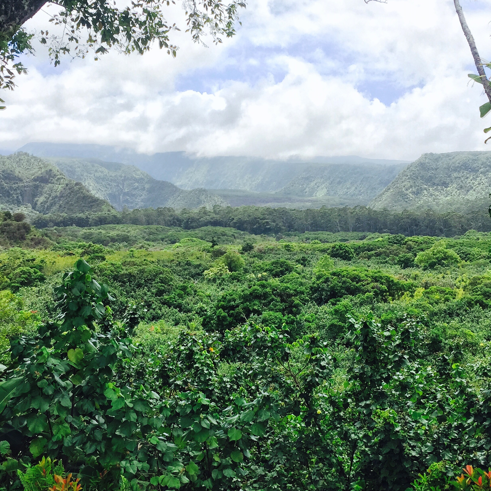
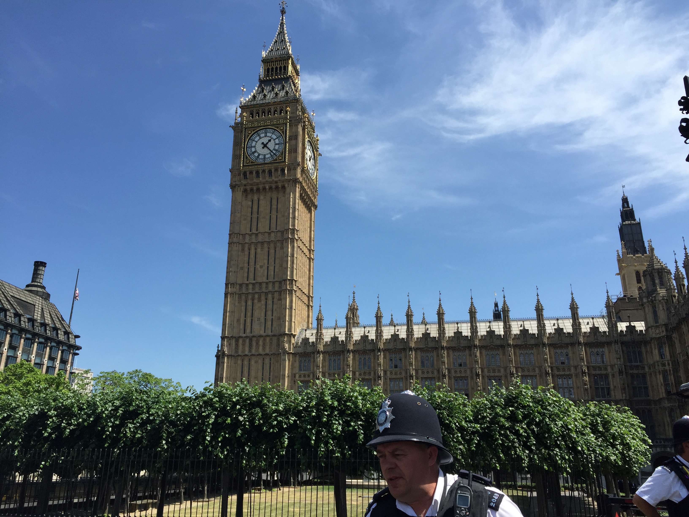
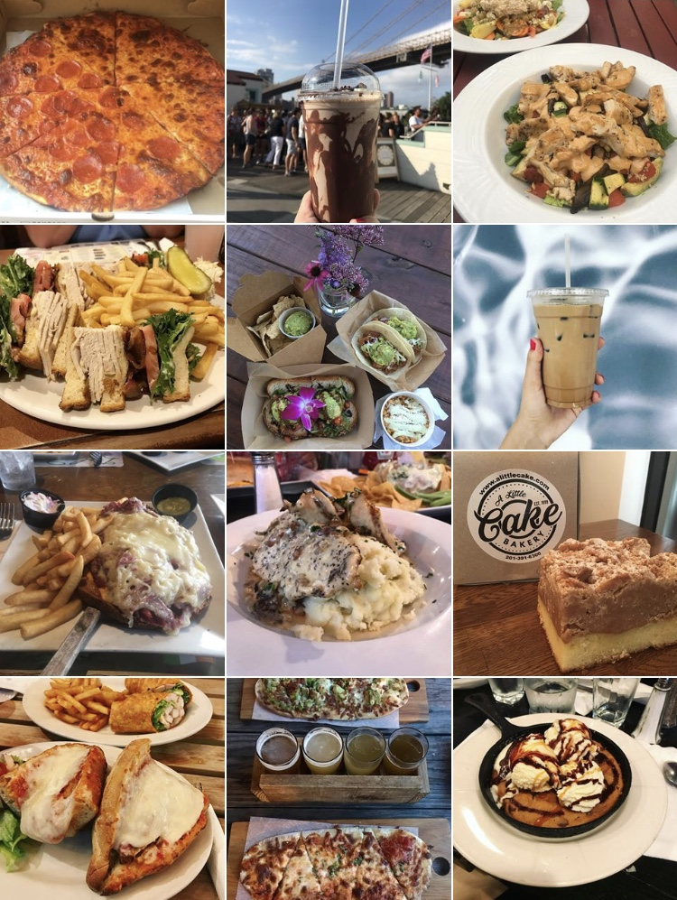

I traveled along the south of Ireland and everything is so green!

Hawaii was awesome to visit! This was known as the Jurassic Park View in Maui.

London is one of my favorite cities! Big Ben's one of my favorite landmarks. I just went to Amsterdam in July. The canals are really cool.
When I travel around the city or at home or anywhere else, I like to try to new food places!

My friend and I document our food travels on an instagram page
( @unqualified_foodies)